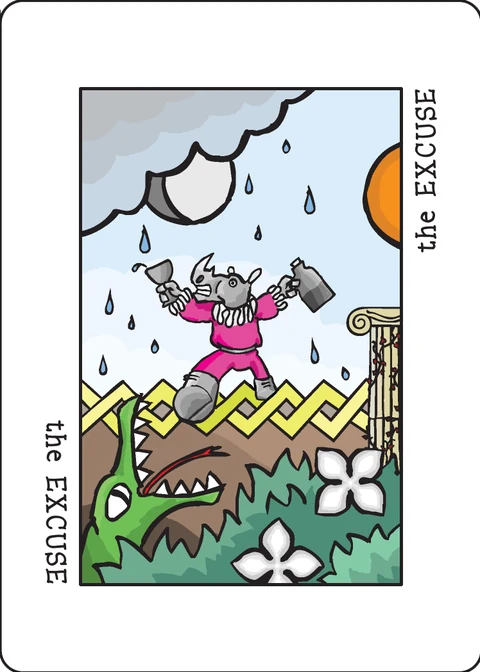

Xing (Frogger)
a racing game for 2–5 players
This game is an attempt to freely mimic the famous 80's arcade videogame where you have to guide a small frog to its home across a traffic filled road and a dangerous river. Also, this game was inspired by Cartagena, from Leo Colovini.
Each player controls a group of 6 frogs which will try to reach their home safely through a dangerous path.
A rethemed version appears as Xing in The Decktet Book. This app implements the two-player pass-and-play game.
Setup
- Each player chooses a color and takes the 6 corresponding tokens.
- Place the Excuse on the center of the table and all the frogs on it.
- Leave the 4 pawns on the side. Shuffle the rest of the cards and draw 8 cards. The corridor is built on the table from these 8 randomly chosen cards plus the four pawns. Shuffle the 12 cards and place them on a line starting at the Excuse. Cards should be placed so that only one half is visible, with the other half being covered by the next card (so only two suit icons from each card are visible).
- Deal 4 cards to each player. This is their initial hand.
- Take 6 cards from the deck and place them face up on the side. This is where players will take cards from. When every card is taken, 6 new cards will be placed again.
Gameplay
Turns go clockwise. The player that looks the most like a frog starts the game (this is not necessarily an advantage).
During a player's turn, they can make from 1 to 3 actions. These are the possible actions:
- Play a card and advance a frog.
- move a frog back and take a card.
The actions can be made in any order but players must at least do one each turn if possible.
Playing a card and advancing a frog
First you must play a card from your hand. Then choose a frog and advance it to the first card on the path that shares one of its suits with one of the suits from the card played (your choice). The actual suit symbol on the path must be free of any other frogs. Then, place your frog on top of the matching symbol suit (effectively covering it up).
If there are no matching suit symbols on the whole line of cards, then just advance the frog to its home at the end of the path (right outside the end of the path of cards).
Note that only suit symbols are considered to be spaces where frogs can be moved to on a card. Numbers and Pawn or Crowns symbols are ignored on the path.
Moving back a frog and taking a card
Choose a frog and move it back to the first card that has at least one free symbol (with no frogs on it). Place the frog on one of the free suit symbols on that card.
When moving back, cards that are completely occupied are skipped over.
Afterward, choose a card from the 6 that were placed to the side and add it to your hand. This is the only way players can get cards. Note that you may not take a card that has the same suit as the one the frog landed on.
When all 6 cards are taken, deal a new set of 6 cards from the deck. If the deck runs out, just shuffle the discard pile to create a new deck.
Note that the Excuse card, is a valid space when moving back. If moving there, you may take any card from any suit.
Blocked Players
In the event that a player finds themselves in a situation where they've got no cards and all their frogs are either at the Excuse or home (no frogs on the actual path), then they're blocked (can't use a card to advance, and can't move back to take a card).
In this case, the player may use their whole turn to take a card.
Remember that as long as you can move a frog back (even to the Excuse card) you're not really blocked, and even if you move back to a spot where you can't take any card (because you're on the same suit symbol as every available card) you can keep using move back actions until you can take a card (if necessary, reaching the Excuse again).
Crowns and Aces
If you play a Crown or an Ace to advance a frog, any other frogs on the card you move your frog to are sent back to the Excuse card (devoured by crocodiles, hit by trucks, etc…). The only frog that stays on the card is the one that just moved there.
End of the Game
The first player to take all 6 frogs home wins the game.
Note on this implementation
Two players, pass and play: one device, alternating turns. Your hand is visible only during your turn; between turns the screen is covered by a pass-the-device dialog and your hand is never rendered for the other player.
The corridor: twelve cards in two wrapped rows (row 2 runs right to left). Every suit symbol of a corridor card is a space one frog can occupy; the physical overlap that hides a third symbol on a Pawn has no screen equivalent, so all of a card's suits are usable spaces. Numbers and the Crown/Pawn marks on a card are ignored as spaces, as the rules say. The Excuse starts the corridor and is a valid space when moving back.
Matching: a played card advances a frog to the first free symbol ahead sharing a suit with it; covered symbols are skipped. If every matching symbol ahead is covered, that frog cannot be advanced with that card (choose another frog or another card); the frog goes home only when no matching symbol at all lies ahead, covered or not.
Turns: 1–3 actions, at least one when any action is possible. After the third action the turn passes automatically. After a move-back that leaves no card you may legally take, the action simply finishes without a card and your turn may continue — as the blocked-player paragraph allows. A player with no possible action at all (extremely rare) may simply pass.
Frog colours: Player 1 is coral, Player 2 is blue; the other three of the five physical colours are unused at two players.
Not implemented: the 3–5 player game and the original Spanish rules page are left out; this app is the two-player game.
Credits
Game Design: Jose Carlos de Diego Guerrero. English Translation: Jorge Arroyo.
These rules are copied from the Frogger page of the Decktet wiki (page revision 23, 11 November 2015) so they can be read offline. The original rules text is (c) 2009, Jose Carlos de Diego; this translation is (c) 2009, Jorge Arroyo, released under a CC BY-NC-SA 3.0 licence. Cards by P.D. Magnus, same licence.
Further reading: Frogger — the original Spanish wiki entry · the blog post where the author first released the game